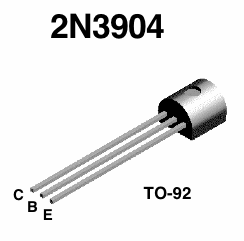
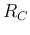

Next: Transistor Circuit Construction
Up: Part 1: Transistor Circuits
Previous: Part 1: Transistor Circuits
Different types of transistors are used in the
AM/FM radio receiver kit
of this lab, including five
2N3904
transistors (also available in the stock room). Use the
Type 575 semiconductor curve tracer
in the electronic lab to test these transistors in common emitter mode.
Observe and take pictures of both the input and output characteristic plots.
Important note: To make sure you do not burn your transistor,
(a) study the datasheet of the transistor to determine the leads for E, B and C,
(b) do not apply voltage higher than 30 V.

Initial control knob settings before you start:
- Display control (top-right)
- Vertical axis (for or
 ): 1 mA/Div
): 1 mA/Div
- Horizontal axis ( or ``base voltage''): 0.1 or 0.5 V/Div
- Horizontal axis (
 or ``collector voltage''): 2 V/Div
or ``collector voltage''): 2 V/Div
- Collector voltage (lower-left)
- Peak voltage range: x1 (be careful to use x10 as maximum voltage is 200 V!)
- Polarity: + for npn transistors
- Peak Volt (): 10 to 20 Volts
- Dissipation limiting resistor (): 1 k

- Base voltage (lower-right)
What to submit:
- Take screenshots of both the input and output characteristic plots
observed on the semiconductor curve tracer with the following clear
labeled (with meaningful increment):
- The voltage (horizontal axis) or
- The current (vertical axis) or
- For the output plot, each one of the 12 values in the family
- Determine the value (also referred to as the
``forward transfer current ratio'' and denoted by or on
the 2N3904 datasheet
(also see class notes)
from the output plot for each of the 5 transistors.
- Determine from the input plot when is within the range of
0.01 to 0.1 mA, i.e., is within the range of to .
- Describe how the load line changes in the output plot when and
increases/decreases.
Next: Transistor Circuit Construction
Up: Part 1: Transistor Circuits
Previous: Part 1: Transistor Circuits
Ruye Wang
2015-07-26